How the verdict is decided
Two inputs for your region: the latest 1-hr PM2.5 reading and the 2-hour weather forecast. Rain always wins.
| 2-hr forecast | PM2.5 | Verdict |
|---|---|---|
| Not raining | Band 1 | Yes, let’s go! |
| Not raining | Band 2 | Better not |
| Not raining | Band 3 or 4 | Go back to sleep |
| Raining | Any band | Go back to sleep |
When is it “Raining”?
When any forecast area in your region shows one of: Light Rain, Moderate Rain, Heavy Rain, Passing Showers, Light Showers, Showers, Heavy Showers, Thundery Showers, Heavy Thundery Showers, or Heavy Thundery Showers with Gusty Winds. Anything else (Fair, Cloudy, Hazy…) is Not raining.
Weather icons
Not raining

Raining
PM2.5 faces
Band 1
0–55
Band 2
56–150
Band 3 or 4
151 and above
Your region’s forecast areas
Each of NEA’s 2-hour forecast areas belongs to its nearest PM2.5 region. For example, East covers Bedok, Changi, Hougang, Pasir Ris, Paya Lebar, Pulau Tekong, Pulau Ubin, Punggol, Sengkang and Tampines.